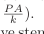
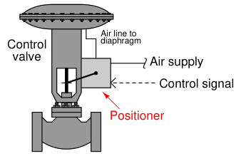
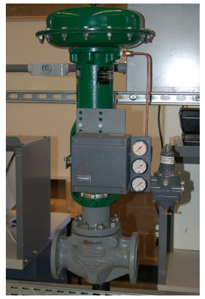
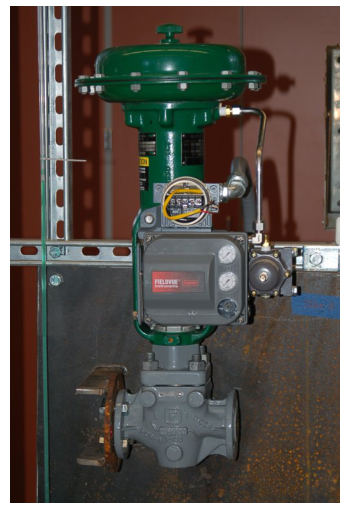
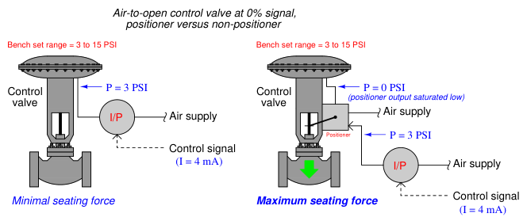
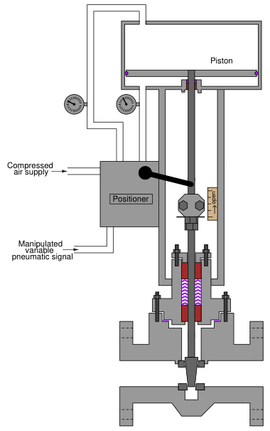

The original, as published: Tony R. Kuphaldt, Lessons In Industrial Instrumentation, Valve positioners. CC BY 4.0, https://creativecommons.org/licenses/by/4.0/. Imported as published, from https://www.ibiblio.org/kuphaldt/socratic/sinst/book/liii.pdf https://www.ibiblio.org/kuphaldt/socratic/sinst/book/liii.pdf
The reason why a pneumatic control valve’s stem position corresponds linearly to the amount of air pressure applied to the actuator is because mechanical springs tend to follow Hooke’s Law, where the amount of spring motion (x) is directly proportional to applied force (F = kx). A pneumatic actuator applies force as a function of air pressure and piston/diaphragm area (F = PA), and the spring in turn compresses or stretches to generate an equal and opposite reaction force. The end-result is that actuator pressure linearly translates into valve stem motion (x = P A

This linear and repeatable relationship between pneumatic signal pressure and valve stem position holds true if and only if the actuating diaphragm/piston and spring are the sole forces at work on the valve stem. If any other force acts upon this mechanism, the relationship between signal pressure and valve stem position will no longer be ideal. Unfortunately, there exist many other forces acting on a valve stem besides the actuator force and the spring’s reaction force. Friction from the stem packing is one such force, and reaction force at the valve plug caused by differential pressure across the plug’s area is another15. These forces conspire to re-position the valve stem so stem travel does not precisely correlate to actuating fluid pressure. A common solution to this dilemma is to add a positioner to the control valve assembly. A positioner is a motion-control device designed to actively compare stem position against the control signal, adjusting pressure to the actuator diaphragm or piston until the correct stem position is reached:

Positioners essentially act as control systems within themselves16: the valve’s stem position is the process variable (PV), the command signal to the positioner is the setpoint (SP), and the positioner’s signal to the valve actuator is the manipulated variable (MV) or output. Thus, when a process controller sends a command signal to a valve equipped with a positioner, the positioner receives that command signal and applies as much or as little air pressure to the actuator as needed
15One way to minimize dynamic forces on a globe valve plug is to use a double-ported plug design, or to use a balanced plug on a cage-guided globe valve. A disadvantage to both these valve plug designs, though, is greater difficulty achieving tight shut-off. 16The technical term for this type of control system is cascade, where one controller’s output becomes the setpoint for a different controller. In the case of a valve positioner, the positioner receives a valve stem position setpoint from the main process controller. We could say that the main process controller in this case is the primary or master controller, while the valve positioner is the secondary or slave controller.
in order to achieve that desired stem position. Thus, the positioner will “fight” against any other forces acting on the valve stem to achieve crisp and accurate stem positioning according to the command signal. A properly functioning positioner ensures the control valve will be “well-behaved” and obedient to the command signal. The following photograph shows a Fisher model 3582 pneumatic positioner mounted to a control valve. The positioner is the grey-colored box with three pressure gauges on its right-hand side:

On the left-hand side of this positioner may be seen part of the feedback mechanism: a metal bracket bolted to the valve stem connector, linking to an arm coming out of the positioner’s side. Every control valve positioner must be equipped with some means to sense the position of the valve’s stem, otherwise the positioner could not compare the valve stem’s position against the command signal.
A more modern positioner appears in the next photograph, the Fisher DVC6000 (again, the grey-colored box with pressure gauges on its right-hand side):

Like the older model 3582 positioner, this DVC6000 model uses a feedback linkage on the left-hand side to sense the valve stem’s position. The even newer model DVC6200 uses a magnetic Hall Effect sensor to sense the position of a magnet bolted to the valve stem. This non-mechanical position feedback design eliminates backlash, wear, interference, and other potential problems associated with mechanical links. Better feedback is essential to better valve positioning.
Control valve positioners are typically constructed in such a way to source and vent high air flow rates, such that the positioner also fulfills the functionality of a volume booster17. Thus, a positioner not only ensures more precise valve stem positioning, but also faster stem velocity (and shorter time delays) than if the valve actuator were directly “powered” by an I/P transducer.
17This is not to say valve positioners have no need for external volume boosters, just that the actuating air flow capacity of a typical positioner greatly exceeds the air flow capacity of a typical I/P transducer.
Another advantage of adding a positioner to a pneumatically actuated control valve is superior valve seating (tight shutoff). This benefit is not obvious at first inspection, and so some explanation is in order. First, one must understand that mere contact between the plug and seat within a sliding-stem valve is not enough to ensure tight shut-off. Rather, the plug must be forcefully pressed down onto the seat in order to fully shut offall flow through the valve. Anyone who has ever tightened the handle on a leaking hose bib (garden spigot) intuitively understands this principle: a certain amount of contact force between the plug and the seat is necessary in order to slightly deform and thereby mold those two components to a perfect fluid-tight fit. The technical term for this mechanical requirement is seat load. Imagine if you will a diaphragm-actuated, sliding-stem, air-to-open control valve with a bench set range of 3 to 15 PSI. At an applied actuator pressure of 3 PSI, the diaphragm generates just enough force to exactly overcome the actuator spring’s pre-load force, but not enough force to actually move the plug offthe seat. In other words, at 3 PSI diaphragm pressure, the plug is touching the seat but with little or no force to provide a tight shut-offseal. If this control valve is directly powered by an I/P transducer with a 3-15 PSI calibrated range, it means the valve will be barely shut at a 0% signal value (3 PSI) rather than tightly shut off. In order to fully force the valve plug against the valve seat to achieve a tight seal, all air pressure would have to be vented from the diaphragm to ensure no diaphragm force opposing the spring. This is impossible with an I/P having a calibrated range of 3-15 PSI. Now imagine that exact same valve equipped with a positioner, taking the 3-15 PSI signal from the I/P and using it as a command (setpoint) for valve stem position, applying as much or as little pressure to the diaphragm as necessary to achieve the desired stem position. Proper positioner calibration is such that the valve stem does not begin to lift until the signal has risen slightly above 0%, which means at 0% (4 mA) the positioner will be trying to force the valve to a slightly negative stem position. In attempting to achieve this impossible demand, the positioner’s output will saturate low, applying no pressure whatsoever to the actuating diaphragm, resulting in full spring force applied by the plug against the seat. A comparison of the two scenarios is shown here:

While positioners are beneficial on spring-equipped valve actuators, they are absolutely essential for some other styles of actuators. Consider the following double-acting pneumatic piston actuator which has no spring:

Without a spring providing a restraining force to return the valve to a “fail-safe” position, there exists no Hooke’s Law relationship between applied air pressure and stem position. A positioner must alternately apply air pressure to both surfaces of the piston to raise and lower the valve stem. Electric control valve actuators are another class of actuator design absolutely requiring some form of positioner system, because an electric motor is not “aware” of its own shaft position in order that it may precisely move a control valve. Thus, a positioner circuit using a potentiometer or LVDT/RVDT sensor to detect valve stem position and a set of transistor outputs to drive the motor is necessary to make an electric actuator responsive to an analog control signal.